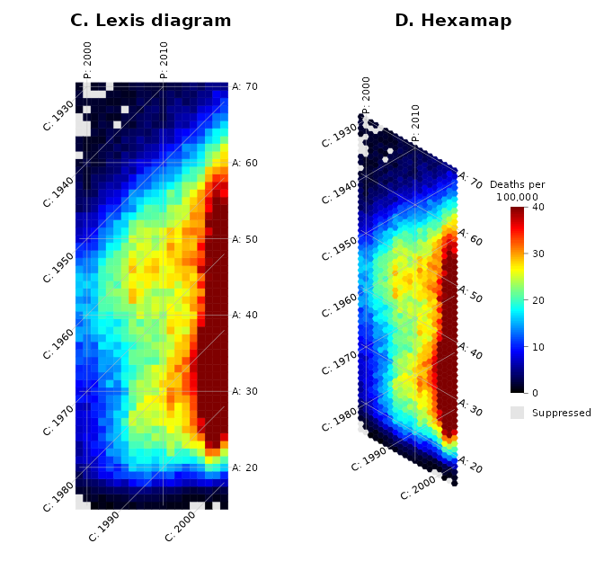
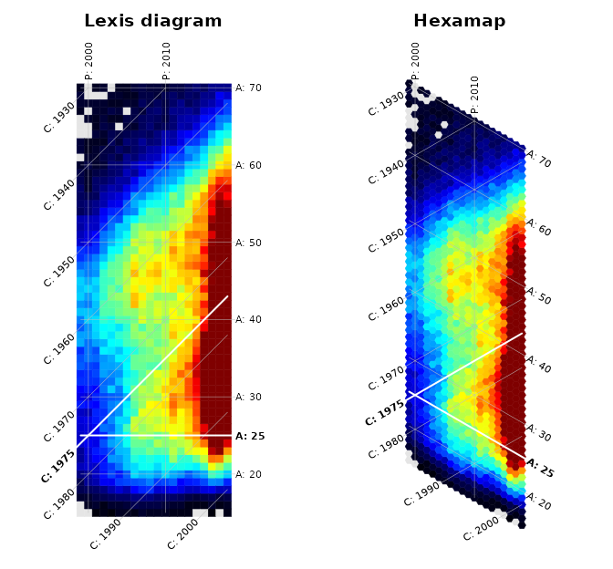
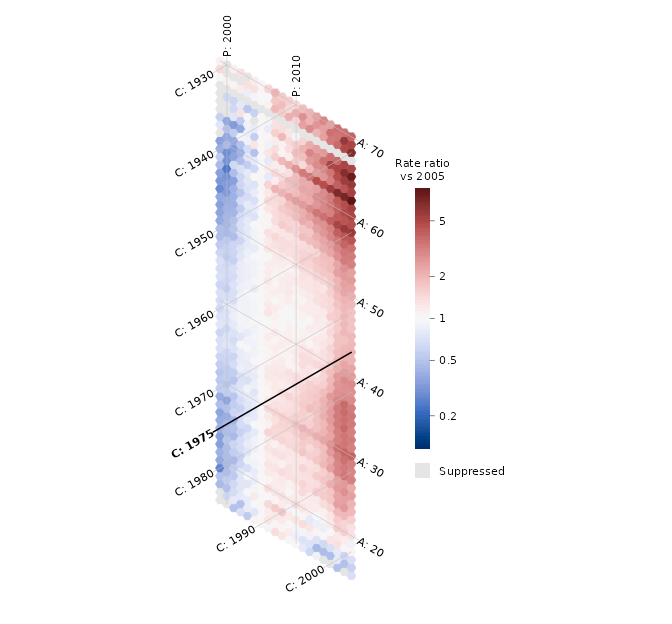
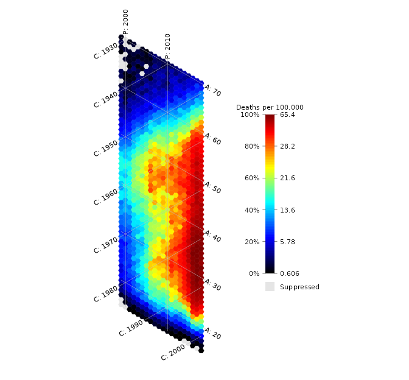

Drug overdose deaths among white men in the United States increased steeply after 2000, but the role of birth cohort is less clear. This vignette reproduces Figure 1C/D of Jalal and Burke (2020) and looks at the same data in a few other ways.
The data
overdose_white_men has accidental drug overdose death
rates (underlying cause ICD-10 X40-X44) per 100,000 white men by single
year of age (15-70) and calendar year (1999-2018), from CDC WONDER.
overdose_white_men_long has the same data with deaths,
population and a reliability flag:
head(overdose_white_men_long)
#> year age deaths population rate flag
#> 1 1999 15 NA 1599105 NA suppressed
#> 2 1999 16 NA 1639893 NA suppressed
#> 3 1999 17 28 1652312 1.694595 reliable
#> 4 1999 18 50 1624251 3.078342 reliable
#> 5 1999 19 51 1659398 3.073404 reliable
#> 6 1999 20 75 1594327 4.704179 reliable
table(overdose_white_men_long$flag)
#>
#> reliable unreliable suppressed
#> 1037 63 20CDC WONDER considers rates based on fewer than 20 deaths unreliable,
and its data use restrictions do not allow publishing counts of 9 or
fewer deaths. The 63 rates based on 10 to 19 deaths were computed from
the deaths and population; the 20 cells with 9 or fewer deaths are
NA, and are shown in grey below. They are at ages 15-16
and, before 2006, at ages 61-70.
Lexis diagram and hexamap
The paper’s Figure 1C/D, with the same color limits (0 to 40 deaths per 100,000) and the paper’s jet palette:
par(mfrow = c(1, 2))
lexis_map(overdose_white_men, colorbar_range = c(0, 40), legend = FALSE,
title_text = "C. Lexis diagram")
hexamap(overdose_white_men, colorbar_range = c(0, 40),
scale_units = "Deaths per\n100,000", na_label = "Suppressed",
title_text = "D. Hexamap")
Both show the period pattern (the rise since 2015) and the age pattern (low rates below age 18). The cohort pattern is easier to follow on the hexamap.
Following a cohort
The paper compares the men born in 1975 with men aged 25. Both lines span exactly 20 years, from 1999 to 2018:
par(mfrow = c(1, 2))
highlight <- list(cohort = 1975, age = 25, col = "white", lwd = 2)
lexis_map(overdose_white_men, colorbar_range = c(0, 40), legend = FALSE,
highlight = highlight, title_text = "Lexis diagram")
hexamap(overdose_white_men, colorbar_range = c(0, 40), legend = FALSE,
highlight = highlight, title_text = "Hexamap")
On the Lexis diagram the 1975 cohort line is about 41% longer than the age-25 line, so the cohort’s increase seems slower than the increase at age 25. On the hexamap the two lines have the same length, which shows that the two increases are similar.
The rates along the two lines:
d <- overdose_white_men_long
cohort_1975 <- d[d$year - d$age == 1975, c("year", "age", "rate")]
age_25 <- d[d$age == 25, c("year", "age", "rate")]
merge(cohort_1975, age_25, by = "year", suffixes = c("_cohort_1975", "_age_25"))
#> year age_cohort_1975 rate_cohort_1975 age_age_25 rate_age_25
#> 1 1999 24 7.548508 25 6.958571
#> 2 2000 25 7.803586 25 7.803586
#> 3 2001 26 8.602653 25 8.573620
#> 4 2002 27 10.964113 25 10.303088
#> 5 2003 28 13.097982 25 13.421035
#> 6 2004 29 14.057940 25 15.898261
#> 7 2005 30 15.155863 25 17.633903
#> 8 2006 31 21.815713 25 22.218291
#> 9 2007 32 21.810024 25 23.623389
#> 10 2008 33 23.485021 25 23.005718
#> 11 2009 34 20.514090 25 21.540655
#> 12 2010 35 24.105347 25 22.465516
#> 13 2011 36 24.056510 25 26.509738
#> 14 2012 37 26.970164 25 24.627992
#> 15 2013 38 24.910500 25 28.910208
#> 16 2014 39 30.027659 25 30.065556
#> 17 2015 40 34.555368 25 37.814793
#> 18 2016 41 44.995354 25 45.426226
#> 19 2017 42 47.300406 25 48.446560
#> 20 2018 43 47.219304 25 43.341196Relative change
A rate ratio relative to a reference year removes the age pattern and
leaves the changes over time. With a log scale and
midpoint = 1, increases and decreases of the same size get
colors of the same strength:
ratio <- overdose_white_men / overdose_white_men[, "2005"]
hexamap(ratio, colorbar_scale = "log", midpoint = 1,
scale_units = "Rate ratio\nvs 2005", na_label = "Suppressed",
highlight = list(cohort = 1975, col = "black"))
By 2018, rates at most ages were 2 to 3 times their 2005 level, and 5 to 9 times among men in their sixties, while they fell for teenagers:
Spreading the colors
The highest rates (above 60 per 100,000) are much higher than most. A quantile scale gives each color the same number of cells, which shows differences among the lower rates:
hexamap(overdose_white_men, colorbar_scale = "quantile",
scale_units = "Deaths per 100,000", na_label = "Suppressed")
Reference
Jalal H, Burke DS. Hexamaps for age-period-cohort data visualization and implementation in R. Epidemiology. 2020;31(6):e47-e49. https://doi.org/10.1097/EDE.0000000000001236
Centers for Disease Control and Prevention, National Center for Health Statistics. Multiple Cause of Death 1999-2018 on CDC WONDER Online Database. https://wonder.cdc.gov/mcd-icd10.html